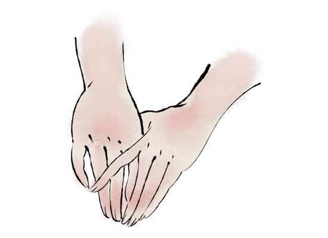

-
“当晋昭公时，诸大夫彊而公族弱，赵简子为大夫，专国事。简子疾，五日不知人，大夫皆惧，於是召扁鹊。”
在这里，扁鹊讲述了一个预知国运的梦。

-
“天下尽以扁鹊为能生死人。扁鹊曰：'越人非能生死人也，此自当生者，越人能使之起耳。'”
在这里，扁鹊救活了一个国君之子。 
-
“病有六不治：骄恣不论於理，一不治也；轻身重财，二不治也；衣食不能适，三不治也；阴阳并，藏气不定，四不治也；形羸不能服药，五不治也；信巫不信医，六不治也。有此一者，则重难治也。”
在这里，扁鹊逃离了一个讳疾忌医的国君。